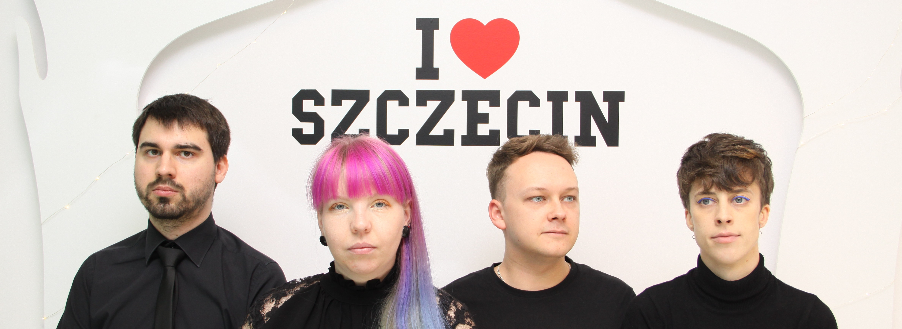
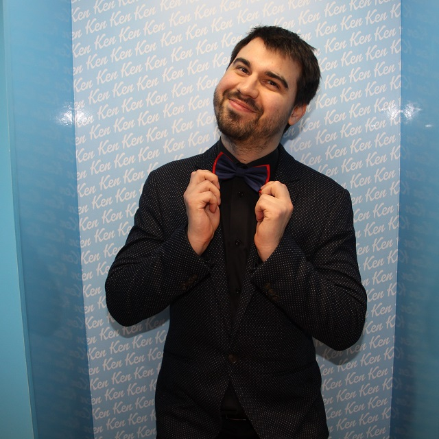

Paula pchała się na scenę od najmłodszych lat. Grała m.in. sosnę, pisankę, jednego z Trzech Króli oraz prowadziła szkolne apele. Przez krótką chwilę działała też w pewnym kole teatralnym, z którym dotarła na Festiwal Twórczości Dziecięcej Pomorskiego Okręgu Wojskowego. W 2010 roku miłość do kabaretu i sceny przywiodła ją na warsztaty w ramach festiwalu SZPAK, które prowadził Władysław Sikora, członek legendarnego kabaretu Potem . Wtedy to Paula poznała improwizację. Dwa lata później na tym samym festiwalu warsztaty poprowadził kabaret Czesuaf, a wśród uczestników znalazły się dwie Agnieszki. To one stworzyły Pod Pretekstem, do której zaprosiły Paulę. Z ochotą przystała na ich pomysł i zaangażowała się w działalność pierwszej grupy impro w Szczecinie. Jest jedną z dwóch osób, które w składzie Pod Pretekstem były od początku do końca jego istnienia. Improwizacja to nie jedyna pasja Pauli. Ukończyła filologię rosyjsko-ukraińską. Fascynuje ją szczególnie kultura Ukrainy. Uwielbia także podróże na Białoruś. W każdej wolnej chwili czyta książki. To książkowa zbieraczka i sama już nie wie, ile ich posiada. Ponadto jest miłośniczką militariów. Dlatego niekiedy można ją zobaczyć w mundurze lub za kierownicą wojskowego samochodu.
Improwizacja to dla mnie sposób na życie. Improwizujesz nie tylko na scenie przed publicznością, ale także w pracy i w domu. Te światy się przenikają. Impro pomaga otworzyć głowę na innych. A oni dają ci inspirację do gry. Poza tym to doskonała zabawa, która pomaga zapomnieć o problemach.

Niewiele brakowało, a na scenie witalibyśmy przeciętnego introligatora zamiast ekspresyjnego improwizatora. Trzecia swoją przygodę z improwizacją zaczęła od spektakularnej pomyłki wchodząc do sali, gdzie odbywały się warsztaty z oprawiania książek zamiast tych dotyczących improwizacji. Wystarczyło kilka minut, by z pretensji na temat kiepskiego przygotowania i organizacji sceny przejść do cichych przeprosin i ucieczki na właściwe zajęcia. W 2015 roku na stałe dołączyła do Szczecińskiej Grupy Improwizacyjnej Pod Pretekstem, ówcześnie jedynej tego rodzaju w naszym mieście. W dzieciństwie, po nieśmiesznym żarcie scenicznym „what’s the matter” wygłoszonym przy nauczycielce Trzecia straciła okazję zagrania matki Kory. Niezrażona, próbowała swoich sił w śpiewie, ale szybko dowiedziała się, że piosenka o czerwonych jagodach ma być wykonana z użyciem głosów dziewczęcych. Niepowodzenia na etapie edukacji wczesnoszkolnej okazały się być fantastyczną sesją coachingową i już w liceum Trzecia tańczyła na korytarzach, prezentowała swój głos podczas szkolnych wydarzeń, robiła tosty na parapetach, udzielała się wolontaryjnie i odkrywała swoje możliwości językowe. Dorosła Trzecia to pani filolog języka szwedzkiego, sąsiadka z ukulele i kolekcjoner książek. Do perfekcji opanowała znikanie wypłaty na podróże, robienie sernika „złota rosa” i budzenie ludzi gromkim „dzień dobry”. Uwielbia sport w dawce męczącej, słodycze, wiersze, duże bicepsy i kwiaty doniczkowe. Improwizacja to dla mnie istotna część życia. Pozwala pozostać sobą w wielu równolegle tworzonych światach, gdzie granice wyznacza wyobraźnia, a jednym z języków urzędowych jest śmiech.

Rafał od małego oglądał polskie kabarety oraz lubił rozśmieszać rodzinę i najbliższych przyjaciół żartami sytuacyjnymi. Objawem jego zainteresowań była prezentacja maturalna z języka polskiego pod tytułem "Środki stylistyczne w tekstach kabaretowych" (z której jest dumny do dziś). Matura ta zaprowadziła go na Elektrotechnikę gdzie poznał i zaprzyjaźnił się z Rogalem. Do świata improwizacji przez rok namawiała go siostra Ola, której to przyjaciółki założyły Szczecińską Grupę Improwizacyjną Pod Pretekstem i to właśnie na ich występach Rafał poczuł, że improwizacja może być sposobem na rozwijanie swoich skrzydeł. Po kilku warsztatach i próbach udało mu się dołączyć do składu swojej ulubionej grupy i rozpoczęła się jego przygoda z impro! Rafał pracuje jako projektant systemów zasilania gwarantowanego (cokolwiek by to znaczyło), a z zamiłowania jest piwowarem domowym. Fan ciężkiego brzmienia, gier komputerowych i książek fantasy. Improwizacja to dla mnie sposób, żeby oderwać się od rzeczywistości i pokonywać własne ograniczenia, ale nigdy nie usłyszycie jak to mówię, gdyż jest to cytat wymyślony na potrzebę opisu.
Rogal już w podstawówce rwał się do wszystkich przedstawień szkolnych, jednak to liceum ukształtowało jego podgląd na sztukę. Lekcje języka polskiego wraz z wyjściami na różnego rodzaju spektakle przekonały go, że sztuka jest najlepszym sposobem na wyrażenie siebie. Jednak początki jego drogi scenicznej nie były związane z teatrem. Rogal był gitarzystą w zespole rockowym, który założył wraz z kolegami ze szkoły. Improwizację odkrył za sprawą Szczecińskiej Grupy Improwizacyjnej Pod Pretekstem i już po pierwszym występie wiedział, że to forma dla niego. Warsztaty oraz próby organizowane przez grupę pozwoliły na dołączenie do składu i rozpoczęcie przygody z impro, którą ma nadzieję kontynuować jak najdłużej. Rogal studiował elektrotechnikę, a teraz zajmuje się projektowaniem instalacji elektrycznych. Jego pasją jest muzyka, której oddaje się grając na gitarze oraz aikido, które zaczął trenować w wieku 12 lat. W wolnym czasie wczytuje się w thrillery oraz kryminały. Improwizacja to dla mnie poszerzanie horyzontów i spojrzenie na różne sprawy z innej perspektywy. Pozwala ci zrozumieć innych oraz lepiej poznać siebie. To również świetne ćwiczenie dla umysłu oraz doskonała zabawa.